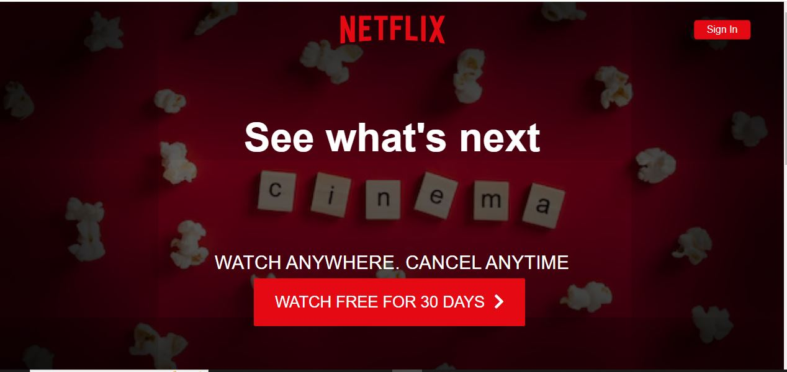

Projects
Project 1: Currency Detector application for Visually Impaired
Link:https://apurvasakpal6.github.io/Currency-Detector-application-for-Visually-Impaired/The Currency Detector App empowers visually impaired users by allowing them to identify currency denominations quickly and accurately. Built using Java, the app utilizes Camera for image capture and Kaggle for analyze datasets
Project 2: Weather Forecast
Link: https://apurvasakpal6.github.io/weather-forecast/
A weather website is a web application that provides real-time. Weather information to users. It typically displays current weather Conditions, forecasts and other related data such as temperature, Humidity, wind speed and precipitation.
Project 3: Netix Home Page Clone
Link: https://apurvasakpal6.github.io/Netflix/
A Netix landing page clone is a website or application. That is designed to imitate the layout, features and functionality Of Netix’s landing page it is often use to showcase design skills.
Project 4: Theme clock
Link:https://apurvasakpal6.github.io/Clock-/

It is a HTML project featuring a dark and light theme clock, the goal is to create a clock that toggles between a dark and light theme, providing a dynamic visual experience.